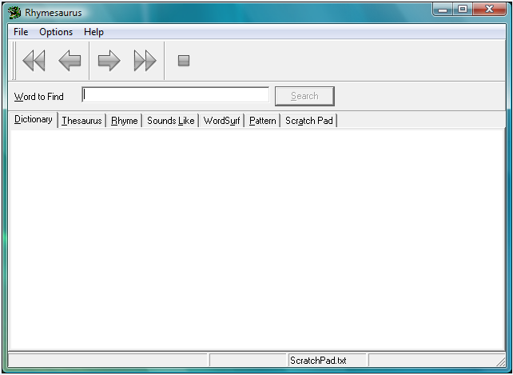

|
An Overview of Rhymesaurus |
Top Previous Next |
|
Rhymesaurus has six main reference works:
Pictured below is the Rhymesaurus main window, from which all six reference works are accessed. To select a particular reference work to search, click on one of the radio buttons in the Search/Link Action area. To search for a word in the selected reference work, type the word to search for in the Word to Find text box and click the Search button.

|